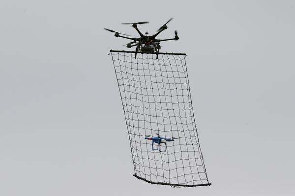
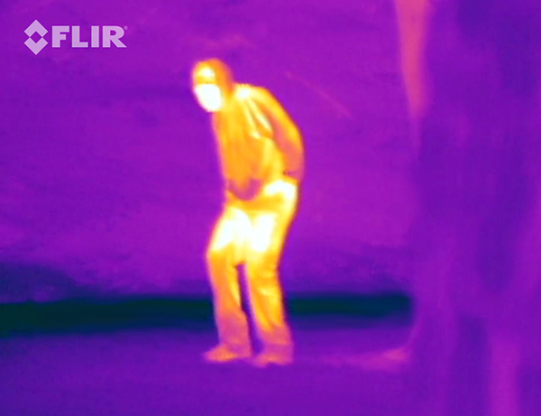
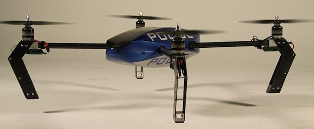

Design Brief
UAS
Unmanned aerial systems or 'drones' are being used more in the current era than ever before. This is partially due to their accessability to the general population. Nowdays, normal people can go out to stores like Walmart and pick up one of these crafts. Professional grade drones could be used for shooting movies, monitoring crops, or any other application without the budget or physical space to house a full-sized manned aircraft such as a helicopter.
Types of Drones
Types of UASs and how they can be used
About our Chapter
Legend High School TSA
Legend's TSA chapter and our school's technology and engineering courses
Main types and their uses
Personal Hobby Drones
There are many types of personal drones that vary from a cheap practice flight drone, to pro flight machines that cost upwards of $1,200. The special thing about hobby drones, are that they are the easiest to fly. Some of the models even fly themselves by integrating a flight GPS into the control system.
Syma X5CProfessional Cinematography Systems
The main differences between a cinematography drone and a hobby drone, are the price, and the camera that is attaced to the body of them. You can mount a GoPro or a camera is included like the DJI Phantom. These type of UASs can also be custom built from frames and motors. These are usually what are used for professional productions.
Drones in CinemaPrivacy Drones
These are the ultimate drones for personal or comercial privacy. They carry nets that can desdtroy or crash a spying drone in the air by clogging or jamming the propellers. These are usually used for major corporations that don't want the public to see what is developing inside until something like a product release.

Missing Person Search and Rescue
Search and rescue drones are special because they have at least one type of thermal imaging device. They are usually controlled by the pilot via First Person View (FPV). They use their thermal sensors to track people, and find thermal signatures. They can also geotag the locations of the data that is collected.

3D Land Plot Scanning
3D mapping drones are special because they have laser beams that can scan the surface that they are flying over, and send it to the pilot to be saved on a storage medium. These types of air systems also fly very steady so that there are less or no imperfections in the scan.
Architectural ScanningAgricultural Monitoring
Checking on crops by use of a drone has become very popular recently. Farmers or inspectors are able to see their crops from the air, and determine if they need to be harvested or watered. They are also able to make sure that all of the irrigation systems are working properly, or farm hands are doing what they are supposed to.
Agricultural Monitoring
Crowd Control / Police
Police/crowd control drones can be flown by the pilot from a safe distance away from the targeted subject. Police drones are fast, and can contain a tazer, and can close in on the subject from a safe distance. Crowd control air systems are usually endurance oriented, and can fly for long periods of time.

History of Unmanned Aerial Systems
-
Civil war
1860's
During the civil war, balloons were filled with explosives to be sent to the other side. First unmanned aircraft assigned to a task..
-
Operation Aphrodite
1944
Operation Aphrodite is started and is planning to use unmanned bomber fighter jets to detonate a target. Pilots would fly the planes to the assigned altitude, then bail with parachutes and allow the plane to crash into the target..
-
Vietnam
1960-1970
Vietnam uses many Firebee drones to take night photos and make supply drops.
-
US Navy UAV
1985
US. Navy launches the first US. military UAV, the Pioneer.
-
Predator Drone
2002
The first Predator drone is used in Afghanistan to survey and make a kill. First unmanned kill made by the U.S. CIA.
-
Non military drones
2013
Sales of non-military drones are estimated to reach sales of about $8.2 Billion in the next ten years. People start to catch onto the many uses of these unmanned aircraft. The Quadcopter is the most popular of them all because of its ability to be precisely maneuvered.
Build Your Own Drone: Guide
Building your own quadcopter can be a great option if you don't know what you want to do with it. You can always upgrade it in the future if you find another project that you want to try out.
Materials:
- Body: The body of the drone can be anything you want. It just needs to be lightweight and sturdy. Your frame needs to be able to mount either four or six motors, and their ESCs. Saying that, the frame needs to weigh the same on all sides. The one that we will be using and reccomending is the Hobbyking X650F because it has foldable arms, and a hightened landing gear that allows it to have a camera mounted under it.
- ESC: The Electronic Speed Controller is an integrated circuit that allows each of the motors to be controlled indevidually by the flight controller. There needs to be one ESC for each motor that you have on your quadcopter, and they are all connected to the power distribution board. They can also be homemade. We will be unsing the Gartt 2212 because it comes with motors, and has simon-k firmware.
- Motors and Propellers: The motors and propellers work in tandem from the power of the ESC to lift the quad off of the ground. The motors that we will be using are the Gart 2212 because it comes with the ESCs, and they have more than enough power to fly with a camera attached to the frame. The propellers that we will be using are the Hooshion Carbon Fiber 5in propellers that come in a four pack. They also have a five-inch blade length that produce more air-power.
- Flight controllers, PDBs, and gps/ radio controller boards: The flight controller is the middleman between the radio controller board and the ESCs. It controls the ESCs to control the motors. They can also control a camera or a gimbal, and the other outputs can be programmed to do whatever you want. The flight controller that we will be using is the Andoer APM 2.6 because it is flashable, and it is compatible with a GPS unit.
Next up is the PDB or Power Distribution Board. This is a simple little peice of electronics that takes the power from the battery(ies) and distributes it to the flight controller and ESCs. The PDB that we will be using is the QPDB XT60 because it has simple and reliable circuits and pre-soldered bullet plugs. We will also need some bullet plugs to go on the ESCs with this. We wil just use these: BW Gold Plated 3.5mm Bullet Plugs.
GPS is the next thing to concider when you are looking at this quadcopter build. There are two options when you are looking at the GPS unit. The Arduino, or a GPS unit that works with you flight controller. GPS is important becuase it can help fly the quad. You can put the quad into hover mode, and allow it to fly itself, or even program a flight path and let it do its thing. The GPS unit that we will be using is the Andoer Ublox NEO-6M. It is also compatible with our flight controller.
This is just the beginning... For more info, see the video below.
Expert Interview
Interview from CNN about the registration of drones in the United States, and the regulations that have been put in place to protect people and their property. This has become a larger issue in the last few months because of the abundance and variety of consumer drones that are more powerful and can fly higher. These vehicles pose a threat to low-flying small planes, and near airports, even large commercial jets.
Career and Technical Education Courses
Classes offered at Legend that prepare for occupations. The following practical arts classes are offered at Legend:
Business and Marketing


Computer Science

Digital Design

Engineering

Criminal Justice

About Legend TSA
The Technology Student Association (TSA) is the only student organization devoted exclusively to the needs of students engaged in science, technology, engineering and mathematics (STEM). Open to students enrolled in or who have completed technology education courses, TSA’s membership includes over 200,000 middle and high school students in over 2,000 schools spanning 49 states. TSA is supported by educators, parents and business leaders who believe in the need for a technologically literate society. Members learn through exciting competitive events, leadership opportunities and much more. The diversity of activities makes TSA a positive experience for every student. From engineers to business managers, our alumni credit TSA with a positive influence on their lives.
Perhaps the most important benefit of TSA membership is the inspiration and enthusiasm that students gain from receiving recognition for applying their knowledge. Demonstrating skills in a forum beyond school walls motivates students, especially when there is a large, like-minded audience of peers who support them.
Membership will provide you with:
- Opportunities to enhance technological literacy and leadership skills
- Career preparation opportunities
- Opportunities to work on complex activities from start to finish
- Challenging competitions
- Community service experiences
- Opportunities to develop leadership skills
- Meet and work with business and industry leaders
- Friendship and fun
- Opportunities to network with students and teachers with similar interests from all over the United States
- Meet and make friends with members of your own school and other schools across the country!
The Competition
A big part of TSA is competitions. Develop technology skills in areas such as animatronics, CAD Design, Desktop Publishing and Web Design. Then test your skills against others in TSA to win first place at the state or even national level. Beginning this year all students will need to qualify in December to attend the state conference in February.
Legend High School has placed over 40 times at the State Conference, and has had the honor to partake in the National Coference a handful of times.
Competiton dates for Legend TSA are:
State Qualifying Event - November, 2015
State Competition – February 18-20, 2016 Denver Tech Center
National Competition – June 28 – July 2, 2016 Nashville, Tennessee
Chapter Team Officers
- Tristan Neate - President
- Jada Price - Vice President
- Kevin Elkin - Treasurer
- Chris Almquist - Secretary

- Kyle Bailey - Reporter
- Matt Wermers - Historian
- Jacob Gay - Officer at Large
- Lara Kaus - Officer at Large
Our TSA Team
About us and our skills
John Korhel
Hi. My name is John and I am a web developer. I have experience with HTML, CSS, MySQL, Wordpress, SASS, Jade, Java, GML, and I am currently utilizing Node JS in my creation of a web based data dashboard. Apart from web design, I also enjoy cinematography and music. I have been playing guitar for a few months, and have been messing around with video cameras since I was 9.
Ryan Harper
I play drums and guitar. In my freetime, I do web jobs for local businesses. I have worked with John Korhel on some of these projects.As I work and develop my skills, I plan to learn new development languages. Currently, I am working on AngularJS and PHP. I like to design site wireframes and actual sites because I am a level 4 design student, and I think that it helps me practice hierarchy. Web Design and Graphic design go together well in my mind, and I think that doing one helps me practice the other. Last year in TSA, we took first place in Web Design and Community Service Video. Here is one of the sites that John and I have developed: Asessment Inspections
John Ripple
Hi! I'm John 2.0. I enjoy long walks on the beach, playing with my dog, and creating video games. I have been credited one of the winners of the National Stem Video Game Challenge along with John 1.0. Apart from designing video games, I also enjoy playing airsoft and math. Thanks for reading!